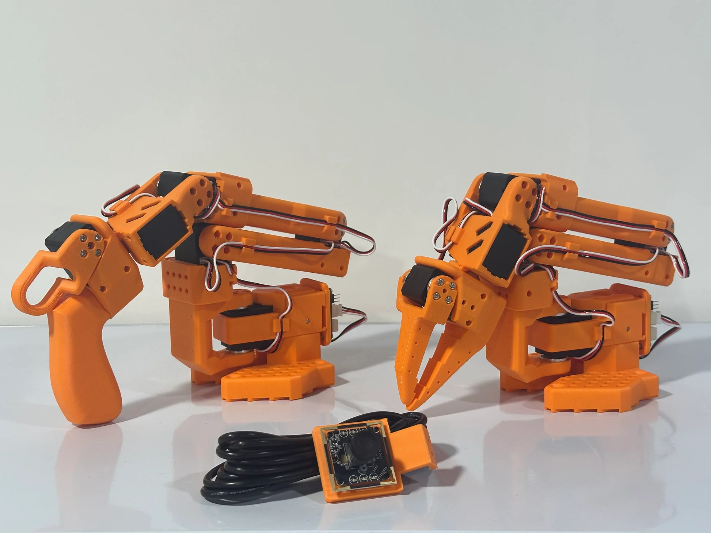
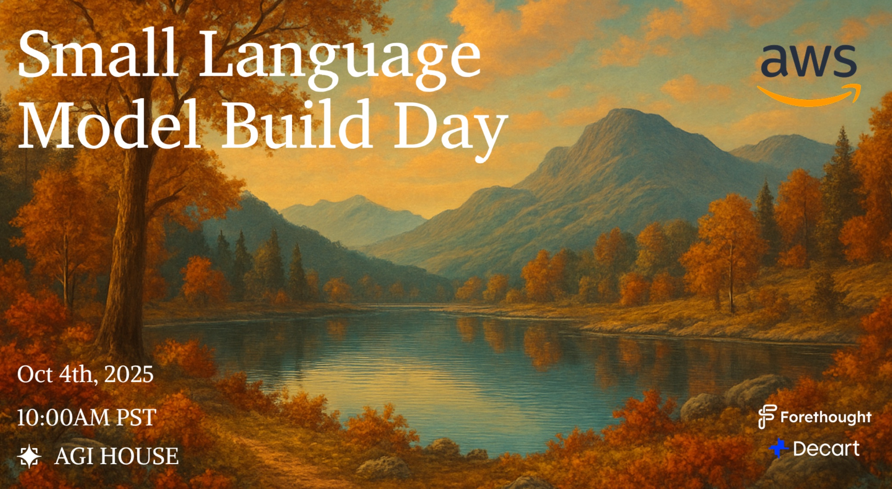

Dexterous In-Hand Manipulation
Teacher–student distillation in IsaacLab; Transfer to Dynamixel‑based gripper.

Robotics & Control Engineer | Columbia University
Specializing in reinforcement learning for reliable robotic autonomy. From dexterous manipulation to full-stack robotic design.
I build machine learning pipelines for robotics, with a focus on reinforcement learning, imitation learning, and sim-to-real deployment. My main interest is in taking learned policies from simulation to physical hardware in a reliable and practical way.
On the reinforcement learning side, I develop sim-to-real pipelines in IsaacLab and Genesis, with an emphasis on robustness through disturbance rejection, teacher–student distillation, and observer-augmented feedback for real-world deployment. On the imitation learning side, I am interested in transformer-based policies such as ACT and Diffusion Transformer for learning manipulation skills from demonstrations.
More broadly, I am also interested in efficient AI deployment, including fine-tuning and serving small language models on constrained hardware. I enjoy working across the full stack of robotic systems, from simulation and training infrastructure to embedded deployment on platforms such as Raspberry Pi and Dynamixel-based robots.
Teacher–student distillation in IsaacLab; Transfer to Dynamixel‑based gripper.

RL deployment with DOB feedback; Neural network–constructed observer.

Trained on Genesis & Isaac Sim simulator; achieved stable gait motion; transferred to physical hardware.

Building an imitation learning pipeline on an open-source robotic arm using a single camera. Training and comparing ACT (Action Chunking Transformer) and Diffusion Transformer policies for manipulation tasks.

Offline-capable first aid assistant for emergencies in environments without internet or medical services. Deployed small language models on AWS with Neuron optimization for low-latency, real-time guidance.
Check out my full professional background.